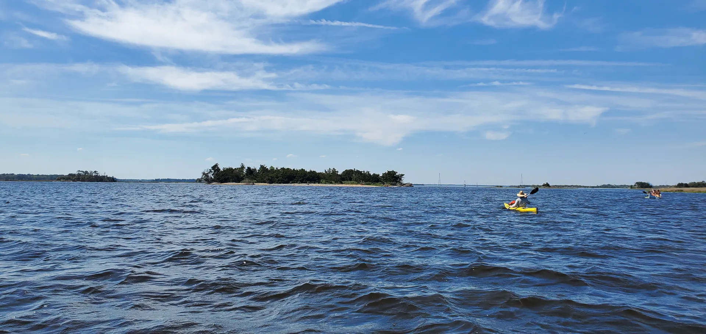

How to Visit
Shark Tooth Island.
There's no bridge, no ferry, no launch from the island itself. You need a boat, kayak or paddleboard. The experience rewards preparation: the right tide, the right gear, enough time to actually hunt.
- First principle
- Leave the island better than you found it. Pack out everything you bring, take loose teeth and not the shoreline, and stay out of posted nesting areas. How to leave it right
- Where
- A small island in the Cape Fear River near Wilmington, NC, just upriver of Keg Island. 34.1175° N, 77.9306° W.
- Getting there
- Boat, kayak or paddleboard (SUP) only. Most people launch at River Road Park (6500 River Rd, Wilmington) and paddle northwest across the river, under half a mile, to the island.
- When to go
- Arrive about 1 hour before low tide, when the shoreline and the fossil layer are exposed. The Hunt Planner shows this week’s best windows.
- Official record
- Owned by the State of North Carolina. New Hanover County lists it as parcel R07800-001-001-000, “Shark Tooth Island, Cape Fear River” (about 7.9 acres).
- Wildlife
- Waterbirds nest on the Cape Fear islands in spring and summer. Stay out of posted areas and give birds space.
Launch at River Road Park. Land in the east-side cove.
- •The launch. River Road Park, 6500 River Rd, Wilmington. Parking is free. The lot isn’t huge, but you can usually get a spot on moderately busy days, and there are restrooms.
- •The paddle. About 0.4 miles northwest across the Cape Fear River, roughly 15 to 20 minutes at an easy pace in calm water.
- •Where to land. Aim for the small cove on the east side of the island. Landing there keeps the island between you and the shipping channel.
- •When to launch. Time it so you arrive about 1 hour before low tide. The Hunt Planner shows this week’s windows.
The river is working water, not a swim beach.
The lower Cape Fear is a federally-maintained shipping channel with strong tidal currents, commercial traffic, and turbid water you can't see through. It is not a place to swim, and it doesn't forgive a casual paddle. Plan the trip, not just the hunt.
- •Wear a PFD. NC law requires one per person; kids under 13 must wear one underway.
- •Don't swim the channel. Currents and boat traffic are unforgiving.
- •Watch for ship wake. Give the channel distance; brace when wakes hit.
- •Leave a float plan. Tell someone your launch, route, and ETA back.
- •Cold-water months (Nov–Apr): dress for the water, not the air.
- •Emergency: 911 · USCG Sector NC 910-343-3882

Access, Gear, Technique, Stewardship.
Access
- •Boat, kayak or paddleboard only, no land access from shore
- •River Road Park is the most common launch point
- •Short paddle from the park to the island cluster
- •Schedule your launch around low tide, not convenience
- •Allow 3–4 hours minimum for a real hunt
- •Check Cape Fear River tide tables, not beach tables
- •Mind ship wake. The federally maintained shipping channel runs alongside, and container ships to Port of Wilmington throw serious wakes; give the channel distance and don't linger near the markers
- •Terrain varies. Jagged rock and shell line the southern beaches, and interior pockets can be soft mud
- •Guided electric boat expeditions to the island are operated by Mozy Outdoors out of Carolina Beach
What to Bring
- •Water shoes or old sneakers. Jagged rock and shell line the southern beaches; flip-flops can make it, but you won’t move as fast
- •A mesh strainer or sifter (old colander works)
- •Bug spray. Shade is available in the island interior, but bugs can be worse there
- •A small dry bag for your phone and finds
- •More water than you think you need
How to Search
- •Work the waterline at low tide, where fossils concentrate
- •Scoop sediment and sift rather than surface scanning
- •Look for the triangular silhouette and flat, smooth surface
- •Black is the color. Ignore brown, tan, or white fragments
- •Dense and heavy is a good sign; shell is light
- •Explore the other islands in the cluster, including Keg Island
Leave It Right
- •Pack out everything you bring in
- •Verify before collecting at scale
- •Respect the wildlife: fiddler crabs, shorebirds, and gators are present
- •Leave it better than you found it
Know Before You Go
Personal fossil collecting is generally permitted on dredge spoil islands. Vertebrate fossils and commercial collection are governed by the Paleontological Resources Preservation Act. For site-specific guidance, check with the NC Division of Coastal Management or the Wilmington District Army Corps of Engineers. When in doubt, photograph it, note the location, and leave it in place.
Continue Exploring